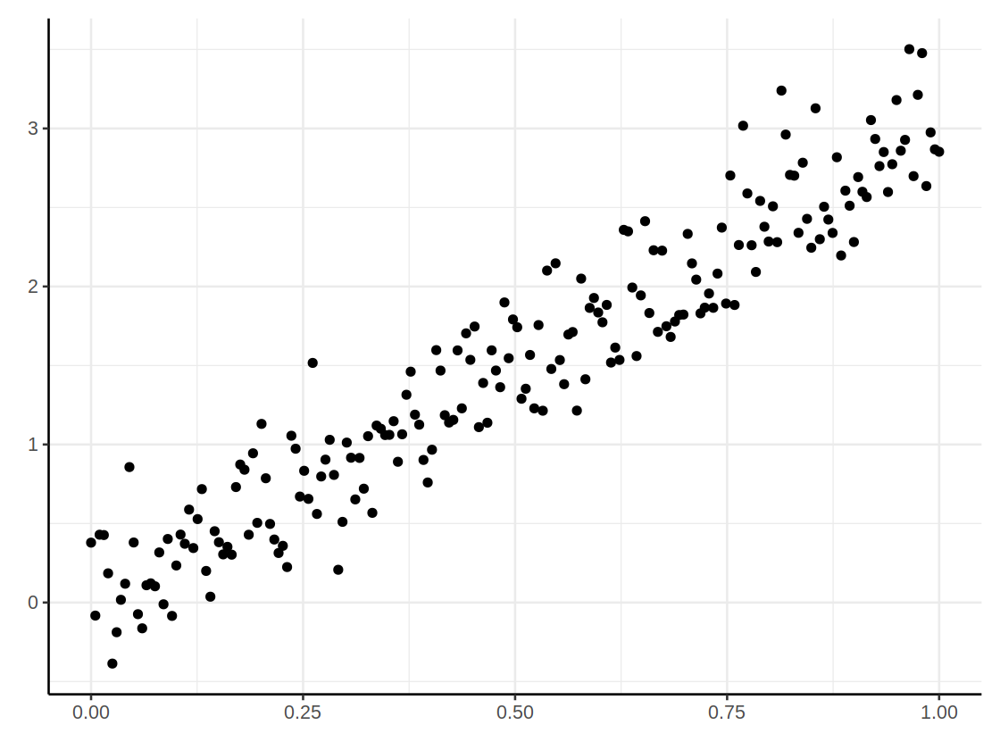
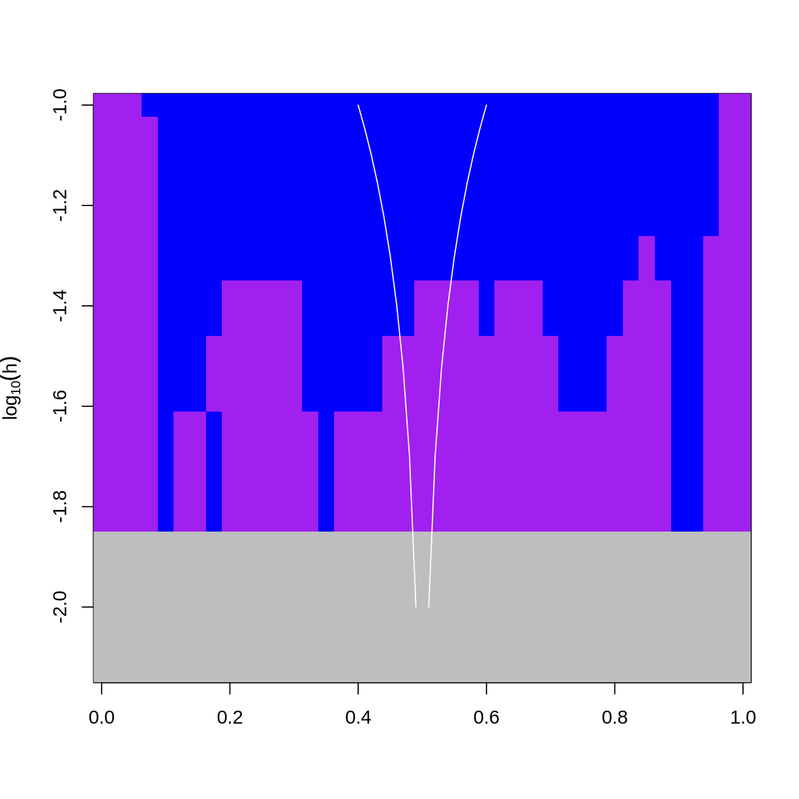
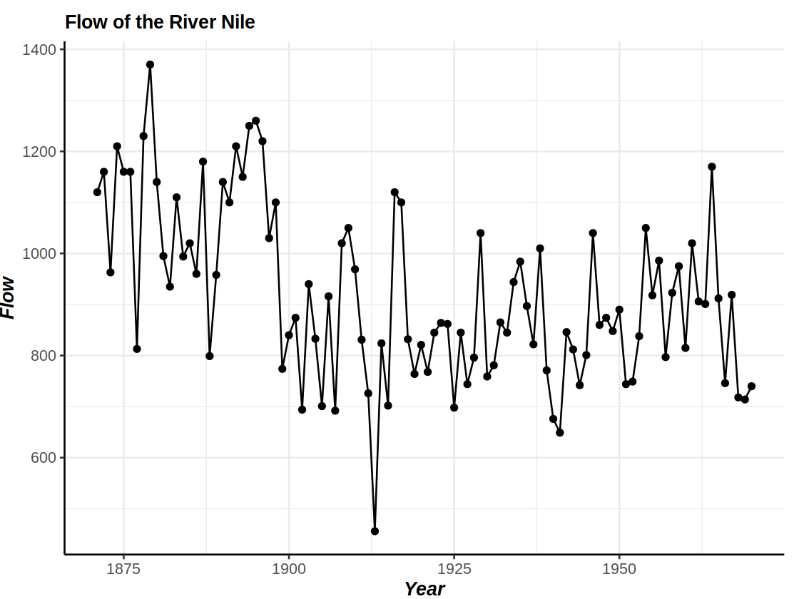
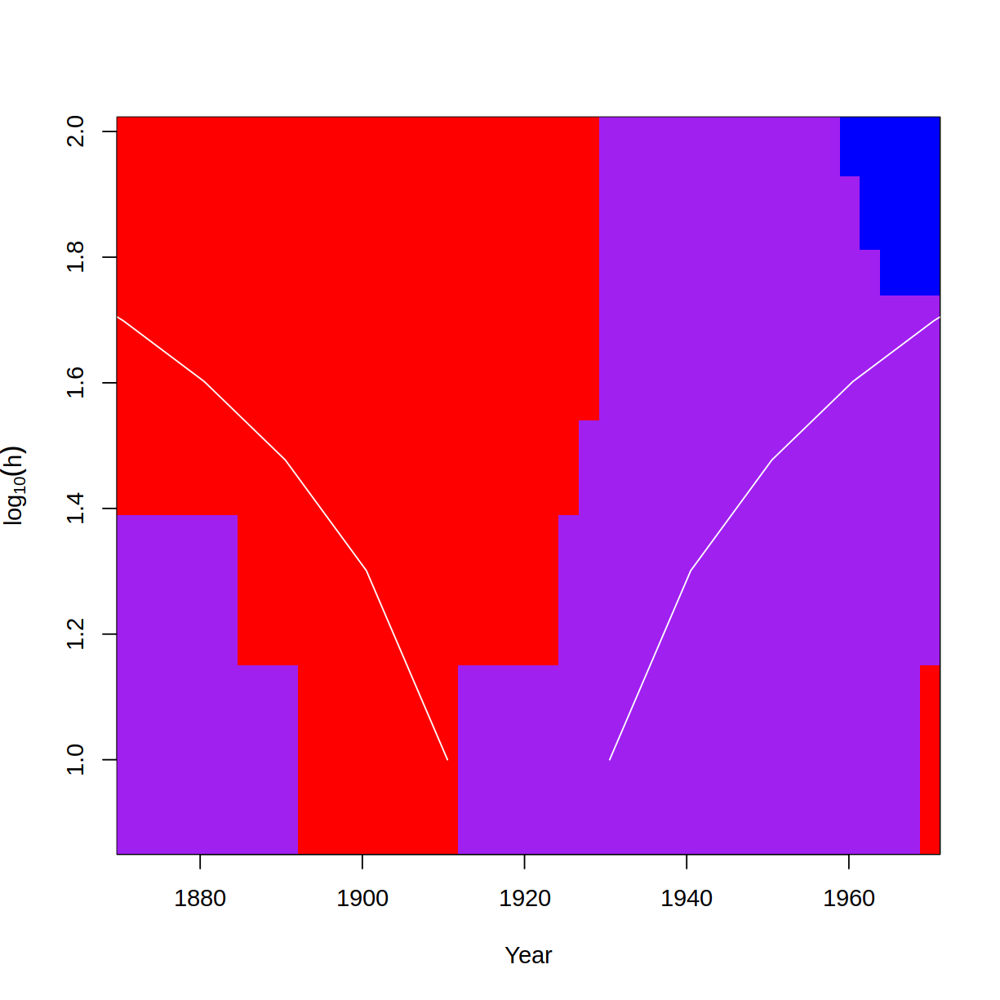

(연구&교수님) 다중척도논문 – SiZer
library(devtools)
install_github("seoyeonc/gglite",force=TRUE)
library(gglite)
library(tidyverse)
library(patchwork)Loading required package: usethis
Downloading GitHub repo seoyeonc/gglite@HEAD
Attaching package: ‘gglite’
The following objects are masked from ‘package:stats’:
density, line, smooth, step
The following object is masked from ‘package:graphics’:
boxplot
The following objects are masked from ‘package:base’:
col, jitter
Warning message:
“package ‘stringr’ was built under R version 4.3.2”
── Attaching core tidyverse packages ────────────────────────────────────────────────────────────────────────────────────────── tidyverse 2.0.0 ──
✔ dplyr 1.1.4 ✔ readr 2.1.4
✔ forcats 1.0.0 ✔ stringr 1.5.1
✔ ggplot2 3.4.4 ✔ tibble 3.2.1
✔ lubridate 1.9.3 ✔ tidyr 1.3.1
✔ purrr 1.0.2
── Conflicts ──────────────────────────────────────────────────────────────────────────────────────────────────────────── tidyverse_conflicts() ──
✖ dplyr::filter() masks stats::filter()
✖ dplyr::lag() masks stats::lag()
ℹ Use the conflicted package (<http://conflicted.r-lib.org/>) to force all conflicts to become errors── R CMD build ───────────────────────────────────────────────────────────────────────────────────────────────────────────────────────────────────
✔ checking for file ‘/tmp/RtmpaiAGpE/remotesfa18456db8c3b/seoyeonc-gglite-1c0c2e5/DESCRIPTION’
─ preparing ‘gglite’:
✔ checking DESCRIPTION meta-information
─ checking for LF line-endings in source and make files and shell scripts
─ checking for empty or unneeded directories
Omitted ‘LazyData’ from DESCRIPTION
─ building ‘gglite_0.1.0.tar.gz’
1. Sizer 기본개념
SiZer 분석은 다양한 밴드위스에서 데이터 스무딩을 통해 시간 시계열 데이터의 트렌드를 분석하는 방법이다. 여기서 밴드위스는 데이터를 스무딩할 때 사용하는 창의 너비를 의미한다. SiZer 분석은 각 밴드위스에서 스무딩된 데이터의 1차 도함수를 계산하여, 그 도함수의 값이 양수인지(증가 추세), 음수인지(감소 추세), 아니면 0에 가까운지를 확인한다.
밴드위스에서 변화의 통계적 유의미성
- 통계적 유의미성: 특정 밴드위스에서 변화가 통계적으로 유의미하다는 것은, 해당 밴드위스에서 관찰된 트렌드(증가 또는 감소)가 데이터의 잡음이나 우연에 의한 것이 아니라 실제로 존재하는 트렌드임을 의미한다.
- 통계적으로 유의미하지 않음: 특정 밴드위스에서 변화가 통계적으로 유의미하지 않다는 것은, 해당 밴드위스에서 관찰된 변화가 데이터의 잡음이나 우연에 의한 것일 가능성이 높다는 것을 의미한다. 즉, 그 밴드위스에서의 변화가 실제 트렌드가 아닐 수 있다는 것을 뜻한다.
SiZer 분석을 통해 다양한 밴드위스에서의 트렌드를 확인함으로써, 데이터의 잡음에 의한 변화를 걸러내고 실제로 의미 있는 트렌드를 파악할 수 있다.
2. 기본 SiZer 분석
# 필요한 패키지 로드
#install.packages("SiZer")
library(SiZer)
# 시계열 데이터 생성
set.seed(0)
t <- seq(0, 1, length.out = 200)
trend <- 3 * t
noise <- rnorm(length(t), 0, 0.3)
time_series <- trend + noise
# 시계열 데이터 시각화
# plot(t, time_series, type = 'l', main = 'Time Series with Trend and Noise', xlab = 'Time', ylab = 'Value')
gglite() + point(t,time_series) + xlab("") + ylab("")
# 다양한 밴드위스 사용
sizer_result <- SiZer(x = t, y = time_series, h = seq(0.01, 0.1, by = 0.01))
# SiZer 결과 시각화
figsize(7,7)
plot(sizer_result,xlab="")
figsize()
SiZer 결과 해석
SiZer 플롯에서는 각 밴드위스에 대한 추세의 통계적 유의성을 시각적으로 확인할 수 있음: - y축의 값이 작은 영역: 작은 밴드위스를 사용한 결과를 나타냄 - y축의 값이 큰 영역: 큰 밴드위스를 사용한 결과를 나타냄
플롯 색상 의미: - 파란색 영역: 해당 밴드위스에서 증가 추세가 통계적으로 유의미함을 나타냄 - 빨간색 영역: 해당 밴드위스에서 감소 추세가 통계적으로 유의미함을 나타냄 - 보라색 영역: 해당 밴드위스에서 변화가 통계적으로 유의미하지 않음을 나타냄
다양한 밴드위스 사용의 중요성
세부 변화 탐지: - 작은 밴드위스를 사용하면 데이터의 세부적인 변화를 감지할 수 있음 - 데이터의 세밀한 구조를 이해하는 데 유용함
전체 트렌드 이해: - 큰 밴드위스를 사용하면 데이터의 전반적인 트렌드를 이해할 수 있음 - 데이터의 큰 흐름을 파악하는 데 유용함
다중 스케일 분석: - 여러 밴드위스를 동시에 사용하면 데이터의 여러 스케일에서 중요한 변화를 탐지할 수 있음 - 다양한 수준에서 데이터의 특성을 이해하는 데 도움이 됨
종합 정리
- SiZer 분석은 다양한 밴드위스를 사용하여 데이터의 중요한 추세를 여러 스케일에서 분석할 수 있는 강력한 도구임.
- 이를 통해 데이터의 전반적인 흐름뿐만 아니라 세부적인 변화까지도 정확히 파악할 수 있음.
- SiZer의 다중 스케일 분석 기능은 데이터 분석에서 매우 유용하며, 특히 복잡한 시계열 데이터에서 중요한 통계적 특징을 식별하는 데 효과적임.
3. 복잡한 시계열
4. Nile
# ggplot으로 시각화
gglite(nile_data, aes(x = Year, y = Flow)) +
geom_line() + geom_point() +
labs(title = "Flow of the River Nile",
x = "Year",
y = "Flow")Don't know how to automatically pick scale for object of type <ts>. Defaulting to continuous.
이 자료는 R의 Nile 데이터셋을 시각화한 것이다. Nile 데이터셋은 1871년부터 1970년까지의 100년 동안 나일 강의 연간 흐름량을 기록한 시계열 데이터다.
주요 내용
- 플롯 유형: 이 플롯은 선 그래프와 점 그래프를 결합한 형태로, 나일 강의 연간 흐름량 변화를 시각적으로 나타낸다.
- x축 (Year): 1871년부터 1970년까지의 연도.
- y축 (Flow): 각 연도에 측정된 나일 강의 흐름량.
해석
- 연도별 흐름량 변동: 플롯은 100년 동안 나일 강의 흐름량이 어떻게 변했는지를 보여준다. 흐름량은 시간이 지남에 따라 증가하고 감소하는 패턴을 보인다.
- 주요 트렌드: 플롯을 통해 특정 기간 동안 흐름량이 증가하거나 감소하는 경향을 쉽게 파악할 수 있다.
이 플롯을 통해 나일 강의 흐름량 변화와 주요 트렌드를 시각적으로 이해할 수 있다.
# SiZer 분석
sizer_result <- SiZer(x = time(Nile), y = as.numeric(Nile), h = seq(10, 100, by = 10))
# 결과 시각화
figsize(7,7)
plot(sizer_result, xlab = "Year")
figsize()
이 그림은 Nile 데이터셋을 SiZer(SIgnificant ZERo crossings) 방법으로 분석한 결과를 시각화한 것이다. SiZer 플롯은 다양한 밴드위스에서 데이터의 추세를 시각적으로 보여주며, 추세의 통계적 유의미성을 평가한다. 각 색상은 데이터의 증가, 감소, 혹은 유의미하지 않은 변화를 나타낸다.
그림 해석
- y축 (log10(h)): 밴드위스의 로그 스케일 값을 나타냄. 밴드위스는 데이터를 스무딩할 때 사용하는 창의 너비를 의미하며, y축 값이 작을수록 작은 밴드위스를, y축 값이 클수록 큰 밴드위스를 의미함.
- x축 (x$x.grid): 연도. 나일 강의 연간 흐름량이 기록된 시간 범위를 나타냄.
색상 의미
- 파란색 영역: 해당 밴드위스에서 증가 추세가 통계적으로 유의미함을 나타냄.
- 빨간색 영역: 해당 밴드위스에서 감소 추세가 통계적으로 유의미함을 나타냄.
- 보라색 영역: 해당 밴드위스에서 변화가 통계적으로 유의미하지 않음을 나타냄.
주요 해석
- 1870년대~1900년대 초반:
- 대부분의 밴드위스에서 감소 추세(빨간색)가 유의미함.
- 1900년대 초반~1940년대:
- 주로 보라색 영역으로, 이 시기에는 대부분의 밴드위스에서 통계적으로 유의미한 변화가 없음.
- 1940년대 후반~1960년대:
- 다양한 밴드위스에서 증가 추세(파란색)가 유의미함.
결론
SiZer 플롯을 통해 나일 강의 연간 흐름량 변화에서 다음과 같은 중요한 패턴을 파악할 수 있음:
- 1870년대부터 1900년대 초반까지는 주로 감소 추세가 유의미하게 나타남.
- 1900년대 초반부터 1940년대까지는 통계적으로 유의미한 변화가 거의 없음.
- 1940년대 후반부터 1960년대까지는 증가 추세가 유의미하게 나타남.
이러한 분석은 나일 강의 흐름량이 시간에 따라 어떻게 변화했는지, 그리고 그 변화가 통계적으로 유의미한지에 대한 통찰을 제공함.